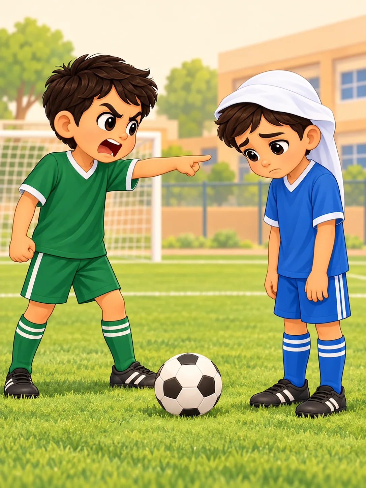
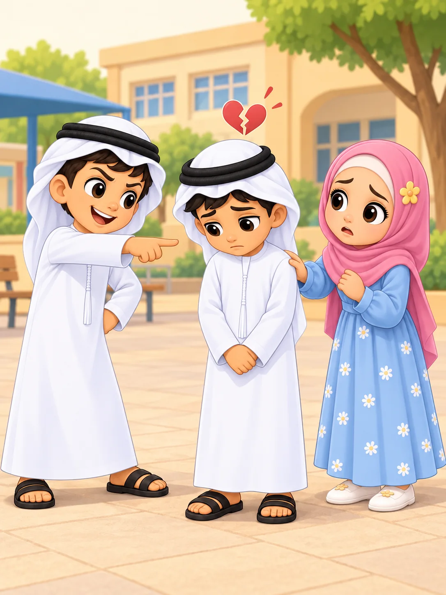
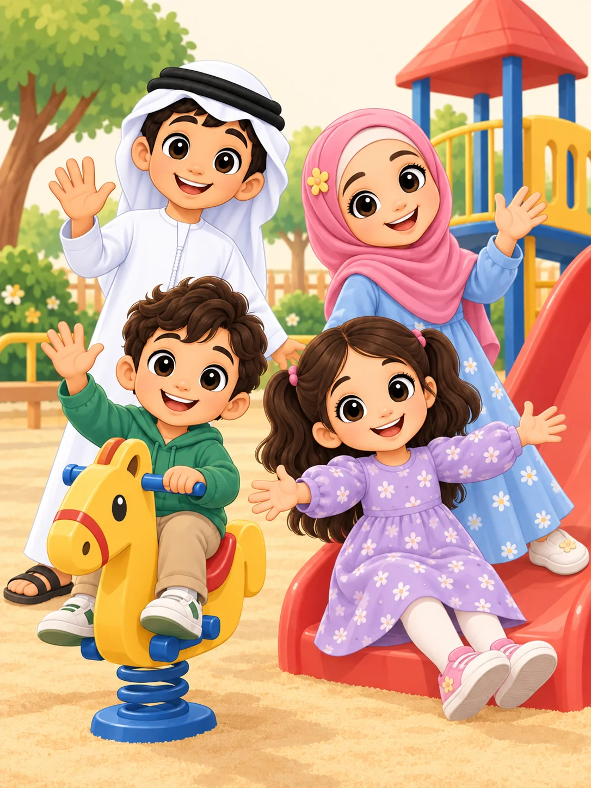
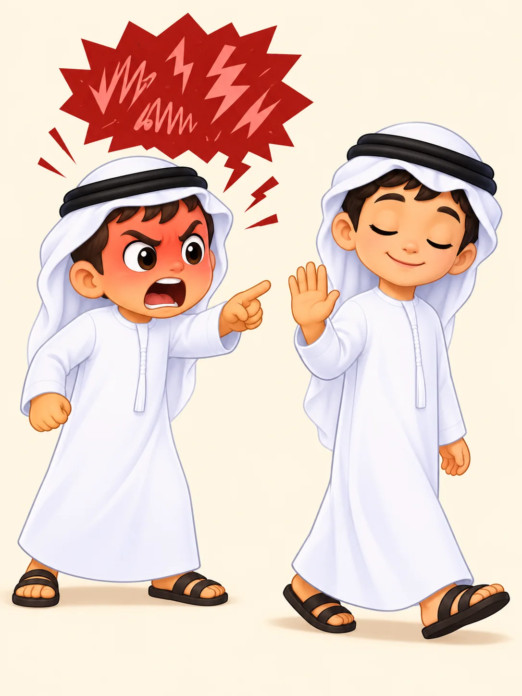
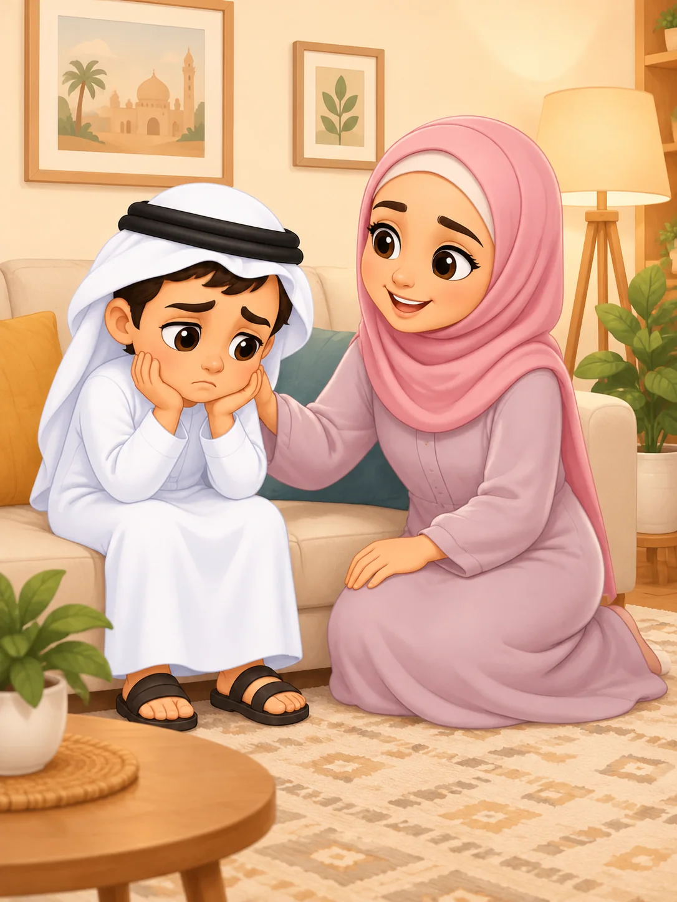
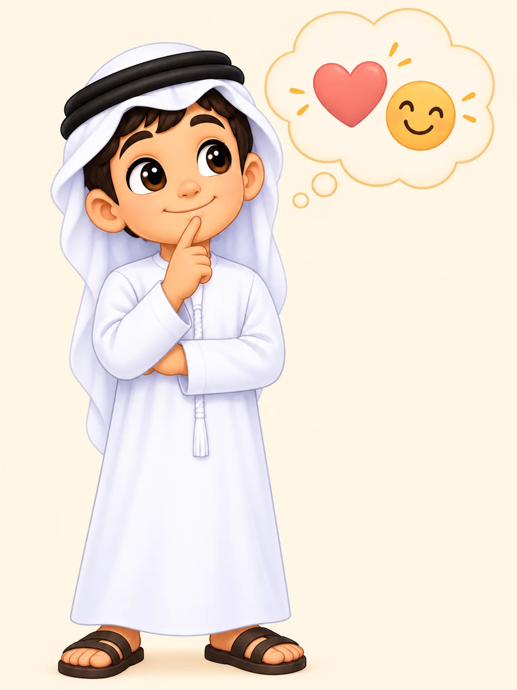
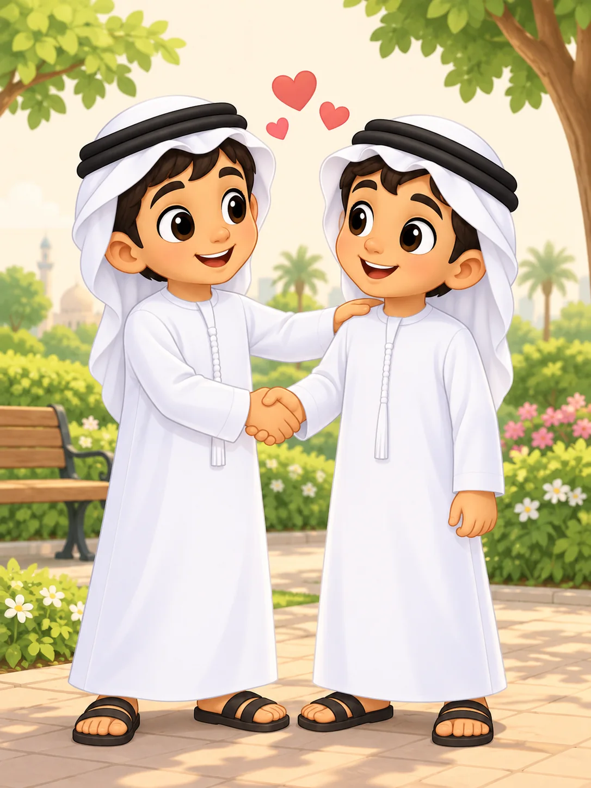
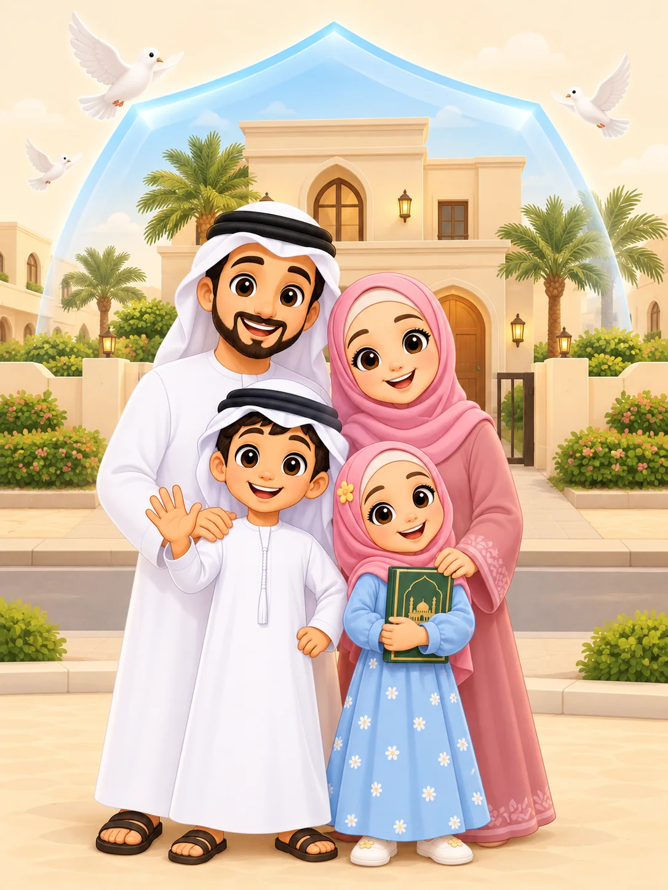
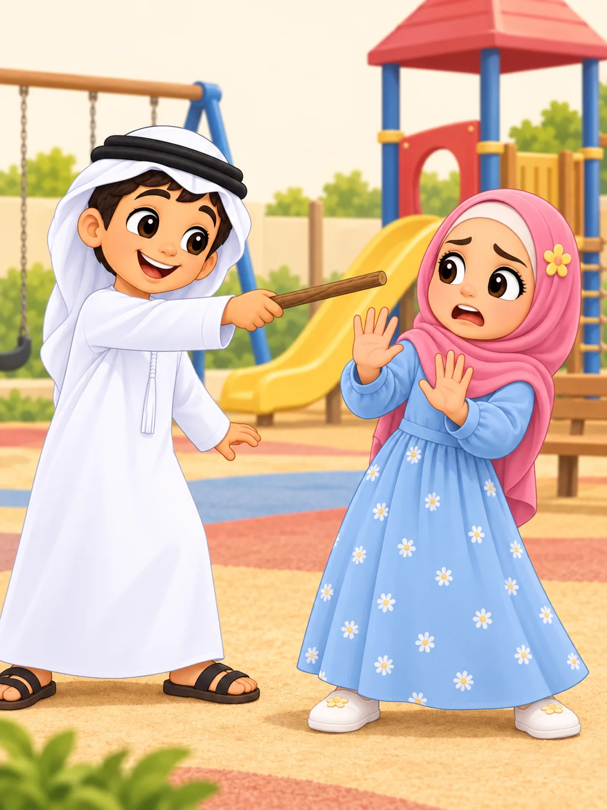
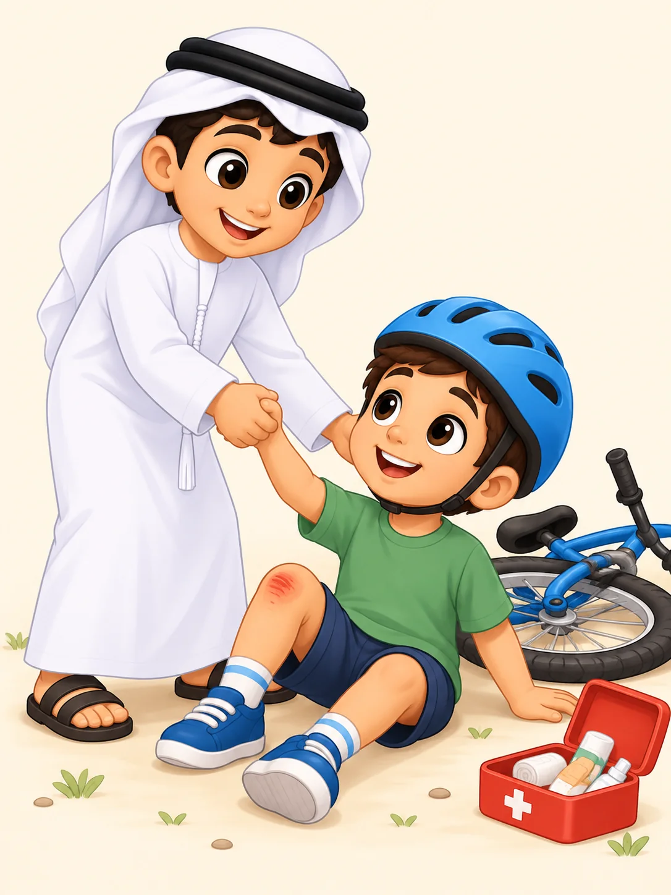

Islamic Education · Grade 6 · Non-Arabic speakers
Two connected lessons · group work in each
Sanctity of the Muslim
The sanctity of a Muslim: «Insulting a Muslim is wrongdoing and fighting him is disbelief.» Islam protects life, honour and speech.
Recite
Explain
Explain
Infer
Before we begin…
Remember & connect
From the previous lesson
What volunteer work can you do?
Think – pair – share
Is it all right to insult a classmate who insulted you?
A situation to discuss
What would you do in their place?
In a match, a player insulted an opponent. Is that just excitement? What did the Prophet ﷺ say about insulting a Muslim?
🤔 What do you do if someone insults you?

The noble hadith
Read & understand
«سِبَابُ الْمُسْلِمِ فُسُوقٌ، وَقِتَالُهُ كُفْرٌ»
"Insulting a Muslim is wickedness, and fighting him is disbelief."
صحيح البخاري ومسلم · متفق عليه

Objective & success criteria
Where are we heading?
Objective: To explain the status of human life in Islam and infer the effect of kind words on social relations.
1
I can recite the hadith correctly
Group 1
2
I can explain the status of human life in Islam
Group 2
3
I can explain the importance of respectful communication
Group 3
4
I can infer the effect of kind words on social relations
Group 4
Our lesson journey
Two lessons · group work in each
Progress check: before the lesson
Where am I now?
Rate yourself from 1 to 5 on each criterion before the lesson and keep your rating.
1
Recite the hadith correctly
1
2
3
4
5
2
Explain the status of human life in Islam
1
2
3
4
5
3
Explain the importance of respectful communication
1
2
3
4
5
4
Infer the effect of kind words on social relations
1
2
3
4
5
Before the lesson
One question
Think and write
What do you do if someone insults you? Why?
Write your answer and your reason on your paper. Keep it — after the lesson we compare how your thinking changed.
The hadith
Understanding the lesson
«Insulting a Muslim is wrongdoing, and fighting him is disbelief» (Bukhari and Muslim). «A Muslim's blood, wealth and honour are sacred.»
Meaning
Understanding the lesson
Don't insult, hurt or take from others — even during games or matches.
Key words
Word treasure
سباب (Sibab)
insulting
فسوق (Fusuq)
wrongdoing
Recite in pairs
From memory · objective 1
1. Partner A recites the hadith from memory, book closed.
2. Partner B checks with the book: correct words · correct order · clear voice.
3. Swap roles.
Teacher: listen to 3 students and note who needs support.
Tongue and hand
Book p.48 · The truth of Islam
Asked who is the best Muslim, the Prophet ﷺ said: “The one from whose tongue and hand the people are safe.” al-Bukhari and Muslim · as printed in the book
Highlight (Ibn Abbas, Book p.48): Say something good, you will win; refrain from saying something bad, you will stay safe.
Think: which words show avoiding verbal violence? Which show avoiding physical violence?

Bad language
Book p.48
A Muslim should not use bad or obscene language, whether he is happy or angry.
The Prophet ﷺ said: “A true believer is not involved in taunting, cursing, indecency or obscenity.” al-Tirmidhi · as printed in the book
HPL: Compare and sort. Name one bad-word habit and one kind replacement.

Family and society
Book p.49 · I think and infer
The family
Give 2 effects of bad language.
Society
Give 2 effects of bad language.
Think: what harm does bad language cause in the family? In society?

Self-control
Book p.49
The Prophet ﷺ said: “He who believes in Allah and the Day of Judgment, let him speak good or remain silent.” Malik, al-Muwatta · as printed
Before you speak, ask yourself: is it good? If not, stay silent.

Two verses on forgiveness
Book p.49
فَٱصْفَحِ ٱلصَّفْحَ ٱلْجَمِيلَ
Qur'an 15:85 · “So forgive with gracious forgiveness.”
خُذِ ٱلْعَفْوَ وَأْمُرْ بِٱلْعُرْفِ وَأَعْرِضْ عَنِ ٱلْجَٰهِلِينَ
Qur'an 7:199 · “Take what is given freely, enjoin what is good, and turn away from the ignorant.”

Think: self-control
Book p.49
1 Hadith: say good or stay silent
مَنْ كَانَ يُؤْمِنُ بِاللَّهِ وَالْيَوْمِ الْآخِرِ فَلْيَقُلْ خَيْرًا أَوْ لِيَصْمُتْ
2 Qur'an 15:85
فَٱصْفَحِ ٱلصَّفْحَ ٱلْجَمِيلَ
3 Qur'an 7:199
خُذِ ٱلْعَفْوَ وَأْمُرْ بِٱلْعُرْفِ وَأَعْرِضْ عَنِ ٱلْجَٰهِلِينَ
What method of self-control does each text teach?
Group work 1
Lesson 1 · criteria 1 & 3 · each group works one criterion
Group 1
Recite the hadith correctly — a mind map
Group 2
Recite the hadith correctly — a word treasure map
Group 3
Explain the importance of respectful communication — a role-play
Group 4
Explain the importance of respectful communication — a harm poster
Leader
manages time and tasks
Researcher
finds the evidence
Writer
records the answer
Presenter
presents in two minutes
15 minutes work → present → peer feedback → teacher → model answer
✓ Valid evidence
from the lesson text
✓ Real situation
an example from life
✓ Correct language
clear and respectful
✓ National identity
linked to our country's values
Group 1 · the task
Success criterion 1
I can recite the hadith correctly
Required product: a mind map of the hadith — the text, 2 key words, and a one-sentence meaning.
Core task · everyone
1. Go back to “The hadith” and extract what meets the criterion.
2. Recite the hadith correctly – with evidence from the text.
3. Give a real example from your life.
✓ Valid evidence
from the lesson text
✓ Real situation
an example from life
✓ Correct language
clear and respectful
✓ National identity
linked to our country's values
HPL: Accuracy. What I will do: I read every word with its marks, then recite from memory.
Group 1 · go deeper
Success criterion 1
★ Bigger challenge
Answer in depth: What do you do if someone insults you?
✓ Valid evidence
from the lesson text
✓ Real situation
an example from life
✓ Correct language
clear and respectful
✓ National identity
linked to our country's values
HPL: Accuracy. What I will do: I read every word with its marks, then recite from memory.
We succeed when: everyone recites the hadith correctly from memory, and the map explains sibaab and fusooq.
Support: “Understanding the lesson” slides.
Group 2 · the task
Success criterion 1
I can recite the hadith correctly
Required product: a word treasure map — the 2 key words سِبَاب (sibab) and فُسُوق (fusuq): the meaning of each and one sentence of your own with it.
Core task · everyone
1. Find the 2 key words in the hadith.
2. Explain each word in your own words.
3. Use each word in a sentence about school life.
★ Bigger challenge: Why does the hadith call insulting fusooq (wrongdoing)? Answer with evidence from the lesson.
✓ Valid evidence
from the lesson text
✓ Real situation
an example from life
✓ Correct language
clear and respectful
✓ National identity
linked to our country's values
HPL: Linking. What I will do: I link each word to its meaning and to a real sentence.
Support: “Key words” slide and the hadith card.
Group 3 · the task
Success criterion 3
I can explain the importance of respectful communication
Required product: a short role-play — a polite response to an insulting situation.
Core task · everyone
1. Go back to “The hadith” and extract what meets the criterion.
2. Explain the importance of respectful communication – with evidence from the text.
3. Give a real example from your life.
✓ Valid evidence
from the lesson text
✓ Real situation
an example from life
✓ Correct language
clear and respectful
✓ National identity
linked to our country's values
HPL: Empathy. What I will do: I imagine how my words feel to the other person before I speak.
Group 3 · go deeper
Success criterion 3
★ Bigger challenge
Analyse the situation: In a match, a player insulted an opponent. Is that just excitement? What did the Prophet ﷺ say about insulting a Muslim?
✓ Valid evidence
from the lesson text
✓ Real situation
an example from life
✓ Correct language
clear and respectful
✓ National identity
linked to our country's values
HPL: Empathy. What I will do: I imagine how my words feel to the other person before I speak.
We succeed when: actors speak calmly, use a kind replacement, and end with a polite solution.
Support: “Understanding the lesson” slides.
Group 4 · the task
Success criterion 3
I can explain the importance of respectful communication
Required product: a harm map poster — two columns, family / society — with 2 effects of bad language in each, and one way to stop it.
Core task · everyone
1. Go back to “Family and society”.
2. Write 2 effects in the family and 2 in society.
3. Add one way to stop bad language.
★ Bigger challenge: Compare: which harm is worse — in the family or in society? Justify your answer.
✓ Valid evidence
from the lesson text
✓ Real situation
an example from life
✓ Correct language
clear and respectful
✓ National identity
linked to our country's values
HPL: Empathy. What I will do: I think about how words change feelings.
Support: “Family and society” slide, Book p.49.
End of Lesson 1
Well done! 🌟
Today we learned
1. The hadith: insulting a Muslim is wrongdoing.
2. Good words or silence: self-control.
3. Forgiveness is beautiful.
Next lesson
The sanctity of human life — how we protect people, and group work 2.
Tell your partner: one thing you will stop saying, starting now.
Lesson 2 · Welcome back
5 minutes · pairs
Quick recall — from Lesson 1
1. Complete: «Insulting a Muslim is …»
2. Say one method of self-control.
3. What do you do if someone insults you?
Today
The sanctity of human life → protecting others → group work 2 → quick challenges.
Sanctity of human life
Book p.50
A person's sanctity covers soul, wealth, honour and home. Islam protects life from assault and terror.
“It is not permissible for a Muslim to terrify a Muslim.” Abu Dawud · as printed
“If someone terrifies a believer without having legitimate right to do so, he will not be protected by Allah from the dreads of the Day of Judgment.” al-Tabarani, al-Awsat · as printed

Think: what is forbidden?
Book p.50
“He who points to his brother with a piece of iron will be cursed by the angels until he stops, even if the other person was his full brother.” Muslim · as printed
What does each of the three hadiths forbid?

Whoever saves a life
Book p.51 · Qur'an 5:32
مِنْ أَجْلِ ذَٰلِكَ كَتَبْنَا عَلَىٰ بَنِىٓ إِسْرَٰٓءِيلَ أَنَّهُۥ مَن قَتَلَ نَفْسًۢا بِغَيْرِ نَفْسٍ أَوْ فَسَادٍۢ فِى ٱلْأَرْضِ فَكَأَنَّمَا قَتَلَ ٱلنَّاسَ جَمِيعًۭا وَمَنْ أَحْيَاهَا فَكَأَنَّمَآ أَحْيَا ٱلنَّاسَ جَمِيعًۭا ۚ
Key idea: whoever saves one life, it is as if he saved all people. Full translation: Book p.51.
HPL: Link to real life. Name 3 ways you can help protect life — then find 3 UAE charities (Book p.51).

Kind talk at school
Book p.52
Discussion is the foundation of peaceful living together. Talk politely with the principal, teachers, classmates and the bus driver.
Sentence frame
“Excuse me, ______. Thank you for ______.”
HPL: Respectful speech. Say it calmly and with a smile.
Protect or violate?
Book p.54
The Prophet ﷺ said: “Your blood, your wealth and your honor are sacred amongst yourselves.” al-Bukhari · as printed in the book
Life, wealth and honor: how do we protect each one? How do we break it?
Fill the table
Book p.54
| Aspect | Protection | Violation |
|---|---|---|
| Lives | ||
| Wealth | ||
| Honor | ||
| Traffic laws |
Group work 2
Lesson 2 · criteria 2 & 4 · each group works one criterion
Group 1
Explain the status of human life in Islam — a safety pledge
Group 2
Explain the status of human life in Islam — a comparison table
Group 3
Infer the effect of kind words on social relations — a script
Group 4
Infer the effect of kind words on social relations — a poster
Leader
manages time and tasks
Researcher
finds the evidence
Writer
records the answer
Presenter
presents in two minutes
15 minutes work → present → peer feedback → teacher → model answer
✓ Valid evidence
from the lesson text
✓ Real situation
an example from life
✓ Correct language
clear and respectful
✓ National identity
linked to our country's values
Group 1 · the task
Success criterion 2
I can explain the status of human life in Islam
Required product: a safety pledge card — Qur'an 5:32 at the top, 2 ways you protect life at school or on the road, and 1 helping action for this week.
Core task · everyone
1. Read “Whoever saves a life” (Qur'an 5:32).
2. Write 2 ways to keep people safe.
3. Pledge one helping action this week.
★ Bigger challenge: Why did Allah make saving one life like saving all people? Explain in your own words.
✓ Valid evidence
from the lesson text
✓ Real situation
an example from life
✓ Correct language
clear and respectful
✓ National identity
linked to our country's values
HPL: Link to real life. What I will do: I connect the verse to one real helping action.
Support: “Whoever saves a life” slide, Book p.51.
Group 2 · the task
Success criterion 2
I can explain the status of human life in Islam
Required product: a comparison table — what Islam protects and what harms it, with evidence.
Core task · everyone
1. Go back to “Meaning” and extract what meets the criterion.
2. Explain the status of human life in Islam – with evidence from the text.
3. Give a real example from your life.
✓ Valid evidence
from the lesson text
✓ Real situation
an example from life
✓ Correct language
clear and respectful
✓ National identity
linked to our country's values
HPL: Analysis. What I will do: I explain why human life is sacred using one evidence from the text.
Group 2 · go deeper
Success criterion 2
★ Bigger challenge
How can you apply “Never insult or hurt others.” in your life? Give two real situations.
✓ Valid evidence
from the lesson text
✓ Real situation
an example from life
✓ Correct language
clear and respectful
✓ National identity
linked to our country's values
HPL: Analysis. What I will do: I explain why human life is sacred using one evidence from the text.
We succeed when: the table gives a correct evidence and a real-life example for each side.
Support: “Understanding the lesson” slides.
Group 3 · the task
Success criterion 4
I can infer the effect of kind words on social relations
Required product: a kind talk script — 3 polite sentences: to the principal, a classmate, and the bus driver, using “Excuse me, … Thank you for …”.
Core task · everyone
1. Go back to “Kind talk at school”.
2. Write 3 polite sentences for 3 people.
3. Act the script in pairs, calmly and with a smile.
★ Bigger challenge: How does one kind sentence change a whole classroom? Give 2 effects.
✓ Valid evidence
from the lesson text
✓ Real situation
an example from life
✓ Correct language
clear and respectful
✓ National identity
linked to our country's values
HPL: Respectful speech. What I will do: I speak calmly and with a smile.
Support: “Kind talk at school” slide, Book p.52.
Group 4 · the task
Success criterion 4
I can infer the effect of kind words on social relations
Required product: an awareness poster — how kind words change relationships.
Core task · everyone
1. Go back to “Meaning” and extract what meets the criterion.
2. Infer the effect of kind words on social relations – with evidence from the text.
3. Give a real example from your life.
✓ Valid evidence
from the lesson text
✓ Real situation
an example from life
✓ Correct language
clear and respectful
✓ National identity
linked to our country's values
HPL: Linking. What I will do: I link each kind word to its effect on people.
Group 4 · go deeper
Success criterion 4
★ Bigger challenge
Design a weekly plan to apply: I control my tongue when angry. · I do not answer insults with insults. · I respect the sanctity of every person.
✓ Valid evidence
from the lesson text
✓ Real situation
an example from life
✓ Correct language
clear and respectful
✓ National identity
linked to our country's values
HPL: Linking. What I will do: I link each kind word to its effect on people.
We succeed when: the poster links kind words to a real effect and includes a UAE value.
Support: “Understanding the lesson” slides.
Key learning points
Building understanding
1
The Prophet ﷺ said: «Insulting a Muslim is wrongdoing, and fighting him is disbelief.»
2
«The believer does not taunt, curse, or use foul or rude language.»
3
Islam forbids killing: «Whoever kills a soul unjustly, it is as if he killed all people.»
4
The UAE is a symbol of mercy, protecting human rights and helping those in need.
Lessons we take
Infer & act
1
Never insult or hurt others.
2
Others' honour is sacred.
Model answers
Checking our understanding
Reflect & critique
Correct and justify
«Insulting a Muslim is wrongdoing.»
✓
True
«It is fine to insult someone who insulted you.»
✗
False
«﴿Whoever kills a soul… it is as if he killed all mankind﴾. Why? Life is sacred, and attacking one harms all society»
✓
True
«A classmate insults you on the pitch. What is the right action? Insult him worse»
✗
False
Two stars and a wish
Peer feedback
Your feedback to classmates is sincere advice: kind in style, aimed at improvement.
★ Star 1
“I liked in your presentation…”
★ Star 2
“Your evidence was convincing because…”
✦ Wish
“I wish you had added…”
✓ Correct evidence
✓ Real example
✓ Clear language
✓ Link to the UAE
The lesson and national identity
Our values, our nation
Respect and protecting dignity are values and laws of UAE society.
Think: How can you protect another student's dignity at school this week?
Write one real action on your paper. Then compare.
Quick challenge 1 of 4
Hiraa
«The believer is not one who insults or...»
a) curses
b) is generous
c) is truthful
d) is brave
Quick challenge 2 of 4
Hiraa
«Al-badhi'» means:
a) one who uses foul language
b) generous
c) silent
d) learned
Quick challenge 3 of 4
Hiraa
«Insulting a Muslim is wickedness». Which behaviour at a match breaks it?
a) Insulting the other team's players
b) Shaking hands
c) Cheering my team
d) Respecting the referee
Quick challenge 4 of 4
Hiraa
How does the UAE protect human dignity?
a) By protecting human rights and helping those in need
b) Neglecting people
c) Injustice
d) It doesn't
After the lesson
Same question · compare
Think and write again
What do you do if someone insults you? Why?
Write your new answer, then compare it with your answer from before the lesson. What changed? Why?
Before the lesson · correct answers: 0
After the lesson · correct answers: 0
Progress check: after the lesson
How far have I come?
Rate yourself again after the lesson and compare with your rating at the start.
1
Recite the hadith correctly
1
2
3
4
5
2
Explain the status of human life in Islam
1
2
3
4
5
3
Explain the importance of respectful communication
1
2
3
4
5
4
Infer the effect of kind words on social relations
1
2
3
4
5
Exit card
Finishing with impact

I will apply
☐ I control my tongue when angry.
☐ I do not answer insults with insults.
☐ I respect the sanctity of every person.
I reflect
What has changed in my understanding after today’s lesson?
✓ What I did well
↻ What I will improve